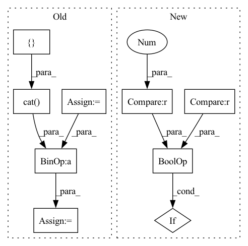

Pattern ID :20523
Before Change
thresholds, _ = torch.sort(torch.cat([thresholds, interm_thresholds]))
// Computing False Rejection Rate (miss detection)
positive_scores = torch.cat(
len(thresholds) * [ positive_scores.unsqueeze(0)
)
pos_scores_threshold = positive_scores.transpose(0, 1) <= thresholds
FRR = (pos_scores_threshold.sum(0)).float() / positive_scores.shape[1]
del positive_scores
del pos_scores_threshold
// Computing False Acceptance Rate (false alarm)
negative_scores = torch.cat(
len(thresholds) * [negative_scores.unsqueeze(0)]
)
neg_scores_threshold = negative_scores.transpose(0, 1) > thresholds
FAR = (neg_scores_threshold.sum(0)).float() / negative_scores.shape[1]
del negative_scores
del neg_scores_threshold
// Finding the threshold for EER
min_index = (FAR - FRR).abs().argmin()
// It is possible that eer != fpr != fnr. We return (FAR + FRR) / 2 as EER.
EER = (FAR[min_index] + FRR[min_index]) / 2
return float(EER), float(thresholds[min_index])
After Change
del neg_scores_threshold
// Finding the threshold for EER
if (FAR - FRR).abs().item() < abs(final_FAR - final_FRR) or i == 0 :
min_index = i
final_FRR = FRR.item()
final_FAR = FAR.item()In pattern: SUPERPATTERN
Frequency: 4
Non-data size: 9
Instances Fragment ID: 66346164
Project Name: speechbrain/speechbrain
Commit Name: 84bca108f8c3739bc2f058bab7e43db32c46e090
Time: 2022-07-01
Author: dominik.wagner@th-nuernberg.de
File Name: speechbrain/utils/metric_stats.py
M Class Name: AnonimousClass
N Class Name: AnonimousClass
M Method Name: EER(2)
N Method Name: EER(2)
M Parent Class:
N Parent Class:
M File Name: speechbrain/utils/metric_stats.py
N File Name: speechbrain/utils/metric_stats.py
M Start Line: 477
M End Line: 505
N Start Line: 477
N End Line: 504
Before Change
else:
if self._allreduce_buffer is None:
index = 0
self._allreduce_buffer = tensor.flatten()
else:
index = torch.numel(self._allreduce_buffer)
self._allreduce_buffer = torch.cat(
[ self._allreduce_buffer, tensor.flatten(),
)
def extract_and_shape(fut):
t = fut.value()[0]
t = fut[index : index + length].view(shape)
if upper_tri:
t = fill_triu(shape, t)
return t
future = torch.future.Future().then(extract_and_shape)
self._allreduce_futures.append(future)
mbs = torch.numel(self._allreduce_buffer) * torch.element_size(
self._allreduce_buffer,
)
if mbs > self.bucket_cap_mb:After Change
return tensor
shape = tensor.size()
if symmetric:
if len(shape) != 2 or shape[0] != shape[1] :
raise NonSquareTensorError(
"Symmetric communication can only be done with a 2D "
f"square tensor. Got tensor with shape {shape}.", Fragment ID: 66345971
Project Name: gpauloski/kfac_pytorch
Commit Name: d443a34c02019e4a257834cfce1acb42a052391b
Time: 2022-02-03
Author: 18683347+gpauloski@users.noreply.github.com
File Name: kfac/distributed.py
M Class Name: TorchDistributedCommunicator
N Class Name: TorchDistributedCommunicator
M Method Name: allreduce(4)
N Method Name: allreduce(4)
M Parent Class:
N Parent Class:
M File Name: kfac/distributed.py
N File Name: kfac/distributed.py
M Start Line: 52
M End Line: 99
N Start Line: 59
N End Line: 79
Before Change
thresholds, _ = torch.sort(torch.cat([thresholds, interm_thresholds]))
// Computing False Rejection Rate (miss detection)
positive_scores = torch.cat(
len(thresholds) * [ positive_scores.unsqueeze(0)
)
pos_scores_threshold = positive_scores.transpose(0, 1) <= thresholds
FRR = (pos_scores_threshold.sum(0)).float() / positive_scores.shape[1]
del positive_scores
del pos_scores_threshold
// Computing False Acceptance Rate (false alarm)
negative_scores = torch.cat(
len(thresholds) * [negative_scores.unsqueeze(0)]
)
neg_scores_threshold = negative_scores.transpose(0, 1) > thresholds
FAR = (neg_scores_threshold.sum(0)).float() / negative_scores.shape[1]
del negative_scores
del neg_scores_threshold
// Finding the threshold for EER
min_index = (FAR - FRR).abs().argmin()
// It is possible that eer != fpr != fnr. We return (FAR + FRR) / 2 as EER.
EER = (FAR[min_index] + FRR[min_index]) / 2
return float(EER), float(thresholds[min_index])
After Change
del neg_scores_threshold
// Finding the threshold for EER
if (FAR - FRR).abs().item() < abs(final_FAR - final_FRR) or i == 0 :
min_index = i
final_FRR = FRR.item()
final_FAR = FAR.item() Fragment ID: 66346104
Project Name: speechbrain/speechbrain
Commit Name: f1fd2091d053c0c34e88b134495f9b791037b3dd
Time: 2022-06-23
Author: tplink312@gmail.com
File Name: speechbrain/utils/metric_stats.py
M Class Name: AnonimousClass
N Class Name: AnonimousClass
M Method Name: EER(2)
N Method Name: EER(2)
M Parent Class:
N Parent Class:
M File Name: speechbrain/utils/metric_stats.py
N File Name: speechbrain/utils/metric_stats.py
M Start Line: 477
M End Line: 505
N Start Line: 477
N End Line: 504